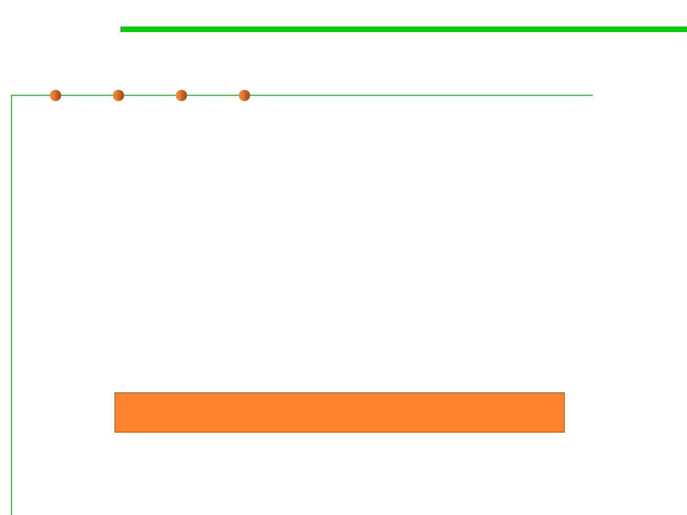

Framework design considerations
5.2 Construction for Reuse
▪ Once designed there is little opportunity for change
▪ Key decision: Separating common parts from variable parts
– What problems do you want to solve?
▪ Possible problems:
– Too few extension points: Limited to a narrow class of users
– Too many extension points: Hard to learn, slow
– Too generic: Little reuse value
“Maximizing reuse minimizes use”